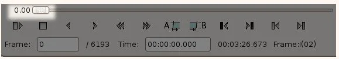
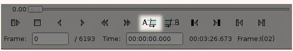
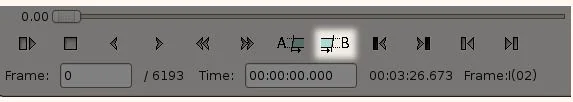
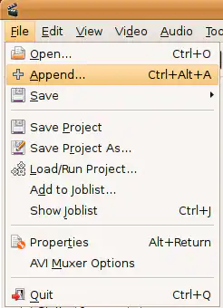
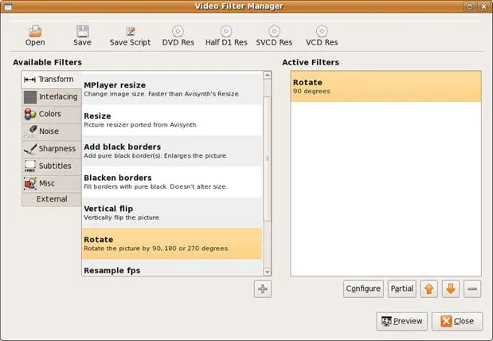
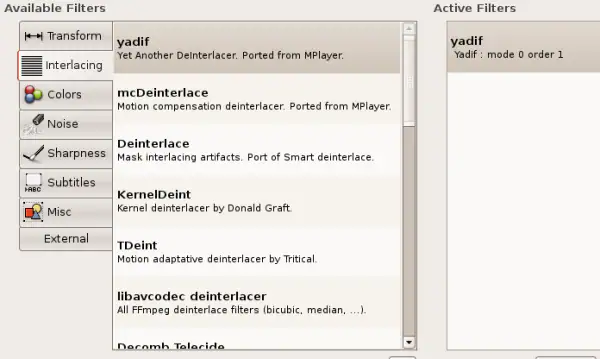
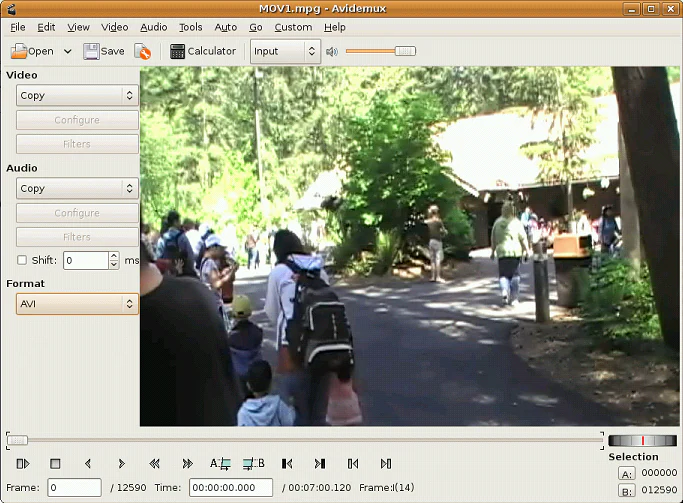
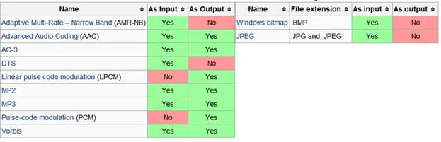
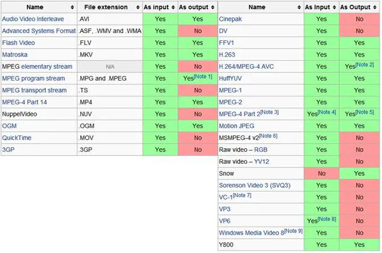

Documentation
Rogner/Diviser/Couper des Vidéos
Cliquez sur Fichier et Ouvrir, puis choisissez le clip vidéo que vous souhaitez couper, puis assurez-vous que vous êtes en mode "Copie". Cela vous sera utile d'utiliser la vidéo préexistante plutôt que de la réencoder dans un nouveau fichier et cela vous fera sûrement gagner beaucoup de temps.
Ensuite, déplacez-vous jusqu'à ce que vous trouviez le cadre souhaité où vous souhaitez découper le fichier. Après avoir obtenu le cadre approprié, appuyez sur le bouton "A" présent en bas de la barre d'outils pour appliquer le marqueur A au cadre actuel.
Utilisez la ligne chronologique pour progresser jusqu'à la fin du clip que vous créez. Notez que ce cadre n'a pas besoin d'être de type "I". Cliquez sur le bouton B lorsque vous avez terminé.
Joignez des vidéos avec Avidemux
Ajoutez votre fichier, puis cliquez sur Fichier/Ajouter. Vous découvrirez que la durée totale de la vidéo augmentera. Enfin, cliquez sur Fichier/Enregistrer/Enregistrer la vidéo ... ou simplement Ctrl + S pour commencer à combiner les fichiers vidéo ajoutés à un nouveau.
Faire Pivoter des Vidéos
Cliquez sur Fichier et Ouvrir, puis sélectionnez le fichier vidéo que vous souhaitez faire pivoter. Choisissez ensuite le format de la vidéo que vous souhaitez générer. Après cela, choisissez des filtres, dans la liste des filtres, sélectionnez "transformer". Après cela, appuyez sur le bouton "Rotation", sélectionnez la manière souhaitée pour faire pivoter votre vidéo, puis appuyez sur "OK" et "Fermer". Cela fermera la fenêtre du Gestionnaire de Filtre Vidéo. Ensuite, vous pouvez enregistrer le fichier sur votre lieu de destination et n'oubliez pas de lui donner un nom.
Ajouter des Effets aux Vidéos
Toujours dans le panneau de gauche, cliquez sur le bouton "Filtre". Vous pouvez maintenant choisir les effets que vous souhaitez, du redimensionnement, du recadrage, de l'étiquetage, de l'ajout de couleurs, de la suppression du bruit à l'ajout de netteté.
Convertir des Vidéos
Recherchez le panneau Format et sélectionnez le format cible dans la liste déroulante. Les formats de sortie pris en charge incluent MP4, MPEG, AVI XVID, AVI-DV, MPG, MKV, FLV, etc. Enfin, cliquez sur Fichier/Enregistrer/Enregistrer la vidéo ... ou simplement Ctrl + S pour commencer l'encodage.
Exporter Différents Formats Audio/Vidéo
Le fichier vidéo se compose de deux parties, à savoir: le conteneur, qui détermine le type de fichier, et le codec. Pour jouer sur un appareil spécifique, par exemple, le mobile, le conteneur et le codec doivent être pris en charge par le lecteur vidéo, sinon cela ne fonctionnera pas correctement.
Formats Audio tel que MP3
Toujours utiliser le format audio .MP3 pour enregistrer des vidéos dans Avidemux car l'audio .mp3 est pris en charge par la plupart des appareils dans le monde et la qualité du son est plutôt bien dans ce format.
Formats Vidéo Tel que MP4
Pour enregistrer la sortie vidéo MP4, nous devons effectuer les étapes suivantes afin d'obtenir de meilleurs résultats des clips:
- Sélectionnez l'option MPEG 4 AVC dans la liste déroulante de vidéo.
- Appuyez sur l'option de configuration, ensuite une nouvelle fenêtre de configuration X264 apparaîtra à l'écran.
- Choisissez Average Bitrate (Bitrate Moyen) dans la liste affichée et fixez Bitrate Moyen à 10000.
- Appuyez sur OK en bas de l'écran pour fermer le Bitrate Moyen.
- Choisissez MP3 dans la liste audio déroulante.
- Après cela, appuyez sur l'option filtres, puis définissez le rééchantillonnage à 48000 et appuyez sur OK
- Sélectionnez MP4 dans la liste déroulante qui apparaît après avoir cliqué sur Format.
- Maintenant, tout est fait et vous pouvez enregistrer la vidéo en cliquant sur Enregistrer ou en appuyant sur la touche de raccourci du clavier Ctrl-S et assurez-vous d'ajouter le nom de l'extension .MP4.
J'ai toujours les meilleurs résultats en effectuant les étapes données, mais tout ce dont vous avez besoin est un ordinateur puissant avec un bon processeur et une bonne RAM pour effectuer un meilleur encodage.
Pour plus de formats audio supportés, veuillez vérifier la capture d'écran:
